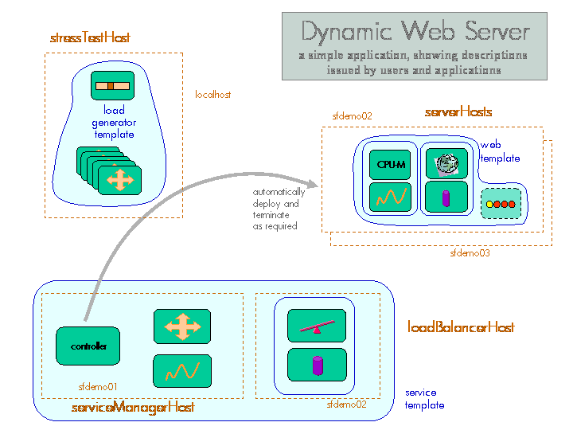
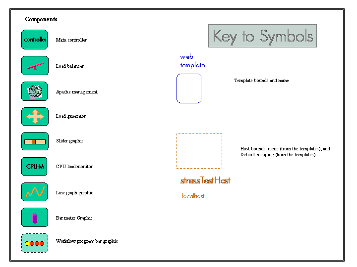

SmartFrog Dynamic Web Server Example
A Brief Description of the Dynamic Web Server Demonstrator
Table Of Contents
Introduction
The Dynamic Web Example is an example of an adaptive application built using SmartFrog. The concept is relatively simple, in that the system implements a web server that adapts to load by deploying or removing web servers according to the load.


The diagram above is an outline of the various parts of the demonstrator. The three main parts, described as different SmartFrog templates, are the core service (the service manager and the load balancer), the web server(s), and the load generators that are provided so as to provide sufficient simulated load to cause the service to have to adapt.
How it works
The first part that must be created is the service manager and the load balancer. When this template is deployed, a number of graphical components will appear on the screen.
On the service manager host, a graph will appear which shows the response time of the active measurements made on the web servers through the load balancer. There are two threshold bars on this graph – the upper one indicating the worst case response before a new web server must be created. The lower one indicates the level of performance at which point it may be OK to terminate one of the web servers and free up the resource.
On the load balancer hosts, a bar graph will appear which shows the number of connections that the load balancer has handled in the last time period. There are an upper and lower tide-mark bars which show the maximum and minimum values reached over the last minute or so.
As the service manager starts, it looks for the minimum web-servers configuration attribute, and deploys the requisite number on the set of server hosts. The service manager does not actually understand the concept of a web service, it simply deploys a template that it is given as a configuration attribute. The service could just as easily be a database, or a gaming service, or some other. The service that is created depends only on the configuration parameter.
As the web server is deployed, a number of steps are defined. Firstly a workflow is started (as indicated by a progress bar graphic that appears on the selected server host). The workflow has a number of steps.
-
a tarball containing the apache distribution is downloaded from the configured location
-
this is expanded and build and the install scripts run
-
a tarball containing some cgi-bin scripts is downloaded and expanded
-
a tarball containing some web pages is downloaded and expanded
At this point the installation workflow is complete and the Apache management components can be started. As these are deployed, a couple of graphs appear that show the CPU load in the server and the number of Apache threads that are running to handle the load. These are provided as visual feedback to show how heavily the server is loaded.
A set of load generators, controlled by a slider, can be deployed and this used to drive the load on the servers. As the load is increased, the servers will start to get loaded, and this can be observed through the graphs.
If the response graph moves above the upper threshold, this will trigger another web server if there is a free server node. If the response moves below the lower threshold, this will trigger the release of a web server if this does not violate the minimum server requirement.
Running The Example
Configuration
This section describes how to configure the dynamic web server demonstrator.
Most of the key files to run the demonstrator are in the sf directory, and in particular the file system.sf contains the top-level definition of the "sfConfig" description, plus the attributes that can be changed to vary the way in which the demonstrator deploys and runs.
There is a certain amount of preparation to do before starting.
1) Locate a number of nodes on which the demonstration will run - ideally this will be five: four for the server components and the one from which the simulated load will be generated and the application descriptions launched. Each of these should have a display so that the various graphs can be seen.
A fewer number of nodes can be used, but the displays will then get confused. Additional ones can also be used, but with no real additional purpose.
The nodes used for the web servers must be x86, running Linux. The version of Apache that will be installed is an old one - we leave it as an exercise to modify this for a more recent version.
-
Each of these nodes should have the SmartFrog release installed,and the daemon started.
-
The file org/smartfrog/examples/sf/system.sf should be edited to define a mapping between the physical nodes and the node attributes used in the descriptions.
-
As Apache is installed, a number of tar files will be downloaded. These tar files have been made available on the Internet at the “www.smartfrog.org” website.
-
The configuration descriptions have been defined to use these tar files, however it would generally be better to download these in advance and place them on a local server so that the communication is more reliable and the performance improved. For example the Apache download is approximately 30MB, this will be slow to download across the Internet.
-
Edit the “org/smartfrog/examples/dynamicwebserver/sf/system.sf” file to define where the web server holding these three tar files are located.
Command line options
To run the demonstrator, there are a number of possibilities
-
to launch the whole demo - the web service and the load generators
-
to launch just the service, and not the load generators
-
to launch only the load generators, perhaps to add additional load to an existing web service
The system.sf file contains an sfConfig definition that contains the two parts: the service and the load generators. Consequently either the entire sfConfig is used, or the two constituent components of sfConfig can be use separately. The command lines for the three alternatives would be as follows:
smartfrog -a wsAll:DEPLOY:system.sf::localhost: -e
smartfrog -a ws:DEPLOY:system.sf:service:localhost: -e
smartfrog -a lg:DEPLOY:system.sf:loadGenerators:localhost: -e
The first could also be done using the simplified sfStart script
sfStart localhost wsAll system.sf
Tuning the demo
The demo has a number of controls that allow users to tune the demonstrator so that the responsiveness of the measurements to loads, and the effect of the loads, can be adjusted.
The measurements are active tests that "hit" the web server with a request for a cgi script to be executed. The time for the script to respond is measured and the result used to draw the response-time graph on the system manager.
Equally, the load generator uses a possibly different cgi-script to load the server. The default settings appear to give reasonable results across a wide-range of server node types. However, if a particularly slow or fast web-server node is used, it may be impossible to either load the server sufficiently, or conversely even the measurement load may be too high. Under these circumstances, using a different cgi-script may be necessary. A variety are provided as part of the tarball, and choosing a different one (they all do an active spin for some 100s of times - a different number for each script). In general, using a long measurement script with shorter load scripts works better than the other way around.
Driving the Example
The principle of the example is that if you increase the load beyond some limit, the system will deploy a second (or subsequent) webserver. The way to increase the load is to move the slider-bar on the load-generator control component's display to the right (to a larger number). This will increase the rate at which the load generators “hit” the load balancer, and hence the web servers.
As the load increases, a number of things can be noticed.
-
On the load balancer connections display, the number of connections to be handled increases as shown by the increasing height of the bar.
-
On the web server, the cpu load will increase, as will the number of Apache threads that are launched to handle the increased load.
-
On the thresholder graph, the results of the active measurements will show an increase, and if this increase ever moves above the upper threshold, a new web server is launched (note that there is some deliberate lag in the decision to do so in order to avoid thrashing in the case of highly variable loadings).
If the load is decreased below the lower of the two thresholds, the system may eliminate a web server, and it will do so if the minimum number of servers will still be maintained.
If insufficient load is possible with a single load generator set (although only one slider bar is visible, this controls a number of generators), a further set can be deployed (using a different name on the command line).
Exploring the Example
Once the system is running, there are a number of ways of exploring the run-time system. The best way to explore the distributed components is to start the management console (this can be done from the basic display menu bar, if this is configured) or started by using the sfManagementConsole command from a shell. Details can be found in the user's manual.
Once the management console has been started, the application can be browsed, and the deployed components examined. As this is done, the management console will hop around the various hosts, pulling details of the distributed components. The host that is currently being accessed can be observed by examining the sfHost attribute of the current component.
SmartFrog components can react to changes in attribute values, and this demonstration reacts to changes in the value of minInstances of the webThresholder component of the service template. This is the attribute which controls the minimum number of web servers that must be present. For example if this is changed from the default value of 1 to 2, and there is currently only one web server deployed, a second will be deployed to meet this requirement. Similarly, if the value is changed back to 1, a web server will be immediately terminated if it is legitimate to do so (i.e. the response time for the measurements is below the lower threshold). Otherwise, the web server will only be released when it does become legitimate to do so.
The web servers deployed all contain some standard pages installed as part of the Apache installation workflow. These pages are partial copies of the www.smartfrog.org web pages, but pointing a browser at the load balancer host (port 80) should result in the return of these pages and the various graphs should show signs of the activity (if this is enough to register).